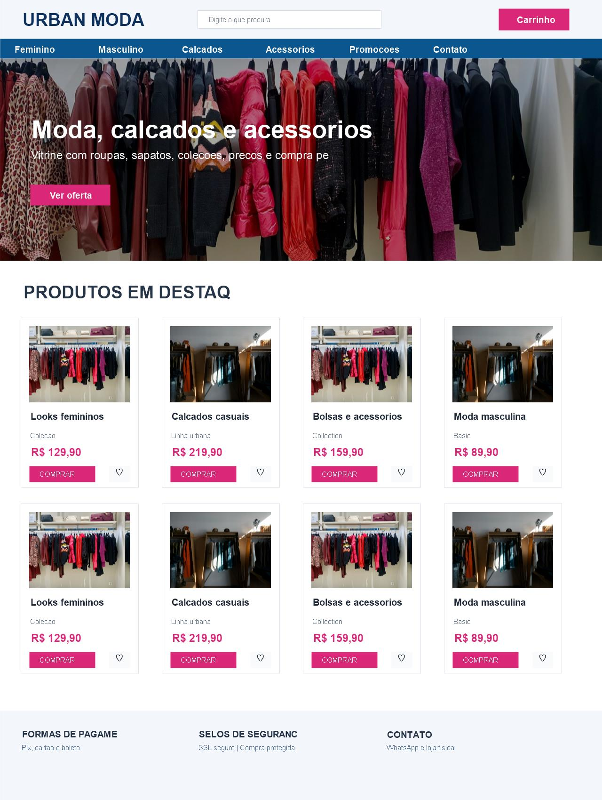
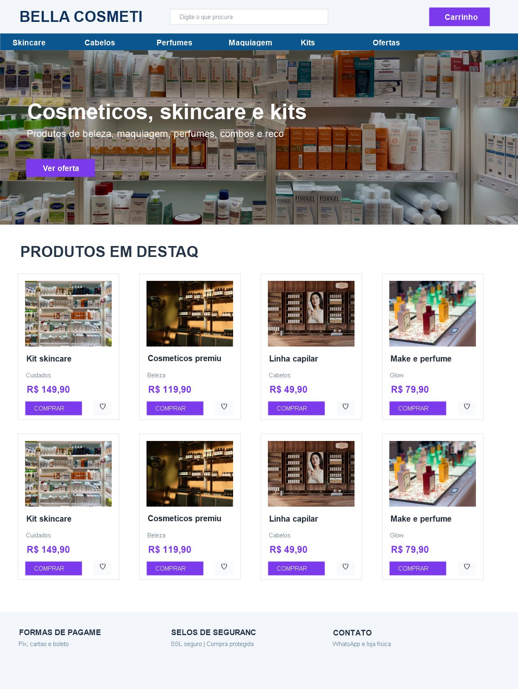
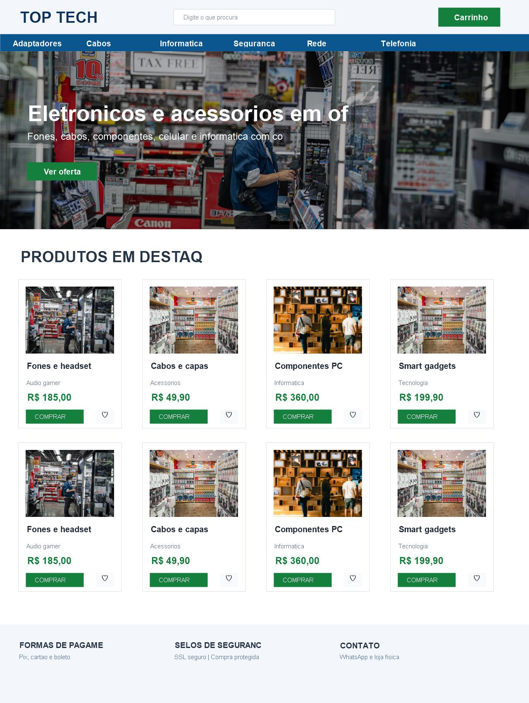
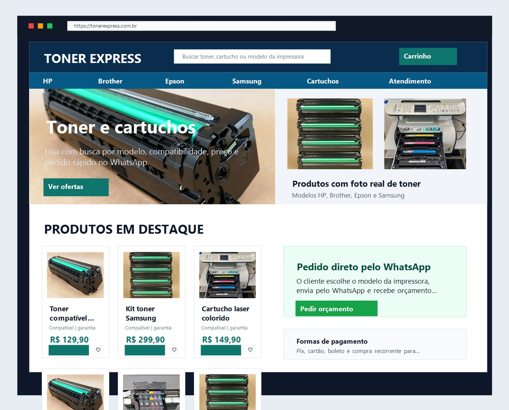
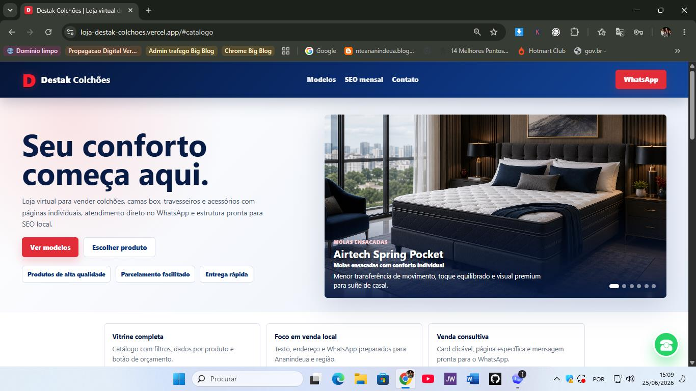
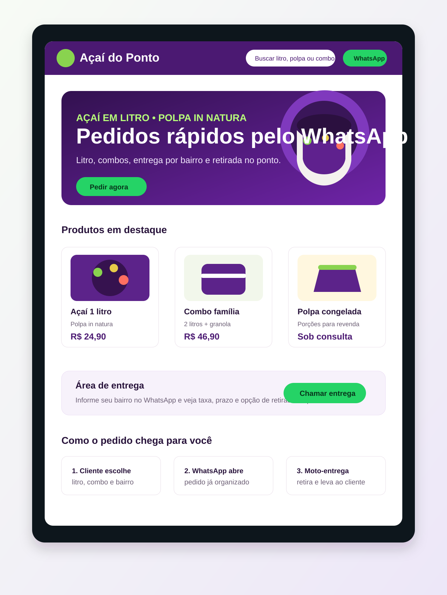

Moda e calçados · demonstração funcional
Vitrine visual para coleções e novidades
Pesquise produtos, filtre categorias, escolha tamanho e cor, monte a sacola e simule o pedido pelo WhatsApp.
Ver demo funcionando →Escolha um segmento, conheça possibilidades de apresentação e veja como seu negócio pode ganhar uma vitrine digital mais bonita, clara e preparada para receber pedidos.
Cada exemplo mostra uma direção possível. Cores, textos, produtos, funcionalidades e identidade serão personalizados para cada projeto.

Pesquise produtos, filtre categorias, escolha tamanho e cor, monte a sacola e simule o pedido pelo WhatsApp.
Ver demo funcionando →
Uma loja elegante para destacar benefícios, linhas de cuidados, kits, promoções e pedidos pelo celular.
Quero algo nesse estilo →
Busca, categorias e informações técnicas bem organizadas para facilitar a comparação e conduzir o cliente à compra.
Quero algo nesse estilo →
Estrutura objetiva para encontrar suprimentos por marca e modelo, conferir estoque e pedir orçamento rapidamente.
Quero algo nesse estilo →
Vitrine completa, páginas de produto, SEO local e atendimento pelo WhatsApp para gerar confiança antes do contato.
Visitar modelo publicado →
Produtos, ofertas, área de entrega e botão de pedido em uma página simples para quem precisa começar rápido.
Quero algo nesse estilo →A galeria é um ponto de partida, não é um modelo fechado. Entendemos o negócio, selecionamos as melhores ideias e criamos uma solução personalizada.
Conhecemos seus produtos, público, objetivo e forma de atendimento.
Escolhemos os elementos visuais e comerciais que combinam com o negócio.
Aplicamos sua marca, conteúdo, fotos, recursos e caminho de venda.
Testamos no celular e no computador antes de colocar o projeto no ar.
Conte qual modelo chamou sua atenção. A Propagação Digital ajuda a adaptar a estrutura ao seu objetivo.